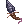
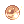
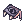

File list
This special page shows all uploaded files.
{kind=link}
{kind=link}
| Date | Name | Thumbnail | Size | User | Description | Versions |
|---|---|---|---|---|---|---|
| 01:00, 18 September 2015 | Heartofmermaid.png (file) | 359 bytes | AloeLeaflet | 1 | ||
| 23:19, 30 September 2016 | No Limits.png (file) | 359 bytes | Inberun | 1 | ||
| 06:04, 30 September 2016 | Song of Lutie.png (file) | 359 bytes | Cyphers | 1 | ||
| 16:17, 30 September 2016 | Fortunity - Creeper Bow.png (file) |  |
360 bytes | Akenoyuki | 1 | |
| 01:01, 22 September 2015 | Silverwork.gif (file) |  |
360 bytes | AloeLeaflet | 1 | |
| 02:52, 1 November 2016 | Grimtooth.png (file) | 361 bytes | Sanoshi | 1 | ||
| 18:34, 20 August 2016 | Gypsy's Kiss.png (file) | 361 bytes | Kuno | 1 | ||
| 18:40, 20 August 2016 | Lady Luck.png (file) | 361 bytes | Kuno | 1 | ||
| 16:17, 30 September 2016 | Fortunity - Elven Bow.png (file) |  |
362 bytes | Akenoyuki | 1 | |
| 01:26, 10 September 2015 | Marionette Control.png (file) | 362 bytes | AloeLeaflet | 1 | ||
| 13:54, 3 October 2016 | Peacekeeper.png (file) |  |
362 bytes | Appleproject | 1 | |
| 06:03, 30 September 2016 | Impressive Riff.png (file) | 363 bytes | Cyphers | 1 | ||
| 16:29, 17 November 2015 | RG DEFE.png (file) | 364 bytes | Halves | Icon for RG Guide. | 1 | |
| 04:57, 1 October 2016 | Fortunity - CD In Mouth.png (file) | 365 bytes | Akenoyuki | 1 | ||
| 22:50, 18 December 2015 | MTurqoise.png (file) | 366 bytes | Adri | 1 | ||
| 12:48, 7 March 2017 | Teleport.png (file) | 366 bytes | AloeLeaflet | 1 | ||
| 11:49, 22 January 2020 | Raid.png (file) |  |
367 bytes | JoaoAlkmim | 1 | |
| 03:31, 1 November 2016 | Poison React.png (file) | 369 bytes | Sanoshi | 1 | ||
| 08:33, 1 June 2017 | HD Bradium.png (file) | 370 bytes | Jack | 1 | ||
| 11:49, 22 January 2020 | Intimidate.png (file) |  |
370 bytes | JoaoAlkmim | 1 | |
| 11:23, 15 April 2016 | 1472.png (file) | 371 bytes | Mayo | 1 | ||
| 23:16, 24 November 2015 | AfroWig.gif (file) | 371 bytes | Lai | 1 | ||
| 19:04, 4 February 2017 | Dissonance.png (file) | 371 bytes | Wolvero12 | 1 | ||
| 12:30, 30 September 2016 | Dragontailmissile.png (file) |  | 371 bytes | Appleproject | 1 | |
| 04:09, 18 February 2016 | RK TSWORD.png (file) | 371 bytes | Shalltear | 1 | ||
| 16:13, 22 November 2015 | Willofwarrior.png (file) |  | 371 bytes | Adri | 1 | |
| 03:51, 6 April 2016 | 1671 ES Vanquisher Staff.png (file) | 372 bytes | Renata | 1 | ||
| 20:29, 4 February 2017 | Classical Pluck.png (file) | 372 bytes | Wolvero12 | 1 | ||
| 16:30, 17 November 2015 | RG SPRQ.png (file) | 373 bytes | Halves | Icon for RG Guide. | 1 | |
| 21:37, 25 October 2016 | Sm provoke.png (file) | 373 bytes | Tachi | 1 | ||
| 19:25, 30 September 2016 | Arrow Repel.png (file) | 374 bytes | Inberun | 1 | ||
| 07:46, 30 September 2016 | Acoustic Rhythm.png (file) | 375 bytes | Cyphers | 2 | ||
| 09:40, 9 September 2016 | Rideword.png (file) |  | 375 bytes | Appleproject | 1 | |
| 14:57, 27 March 2016 | 5763 red bunny band.png (file) | 376 bytes | Renata | 1 | ||
| 09:39, 9 September 2016 | Deathfireicon.png (file) |  |
377 bytes | Appleproject | 1 | |
| 03:54, 6 April 2016 | 28001 ES Ripper Katar.png (file) | 378 bytes | Renata | 1 | ||
| 19:48, 14 April 2016 | 5377.png (file) | 378 bytes | Mayo | 1 | ||
| 01:33, 18 September 2015 | Yggleaf.png (file) | 379 bytes | AloeLeaflet | 1 | ||
| 00:58, 18 September 2015 | Blueherb.png (file) | 380 bytes | AloeLeaflet | 1 | ||
| 07:28, 30 September 2016 | Melody Strike.png (file) | 380 bytes | Cyphers | 1 | ||
| 11:23, 15 April 2016 | 1636.png (file) | 381 bytes | Mayo | 1 | ||
| 05:05, 27 March 2016 | 5869 mimic egg shell.png (file) | 381 bytes | Renata | 1 | ||
| 05:07, 30 September 2016 | Bd bragi.png (file) |  |
381 bytes | Cyphers | Magic string AKA Bragi for bard | 1 |
| 05:05, 1 October 2016 | Fortunity - Thanatos Bow.png (file) |  |
381 bytes | Akenoyuki | 1 | |
| 19:47, 11 January 2016 | 18570.png (file) | 383 bytes | Tokeiburu | 1 | ||
| 01:00, 18 September 2015 | Glasstube.png (file) | 383 bytes | AloeLeaflet | 1 | ||
| 03:55, 27 March 2016 | 5213 black bunny band.png (file) | 384 bytes | Renata | 1 | ||
| 19:59, 14 April 2016 | 18848.png (file) | 385 bytes | Mayo | 1 | ||
| 17:35, 1 October 2016 | Bloodofwolf.png (file) |  |
385 bytes | Appleproject | 1 | |
| 13:20, 5 October 2016 | Arrullo.png (file) |  |
387 bytes | Seandh | 1 |
{kind=link}
{kind=link}
{kind=link}
{kind=link}
{kind=link}
{kind=link}
{kind=link}
{kind=link}
{kind=link}
{kind=link}
{kind=link}
{kind=link}
{kind=link}
{kind=link}